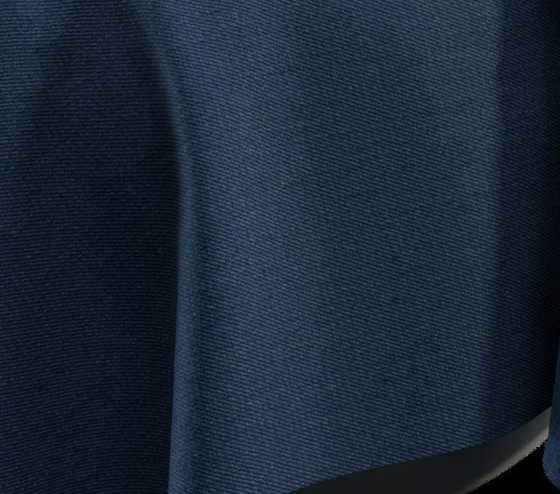
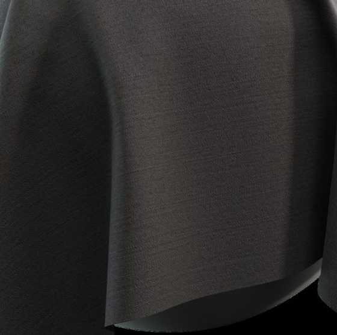

ABOUT
食堂の名前を、残したかった。
「藤重」は、店主の祖父が営んでいた「藤重食堂」に由来する屋号です。食堂が閉まったあとも建物は家族に守られ、その古民家をリノベーションして、古着とカフェの店として生まれ変わりました。
古着は海外での買い付けも行い、コーヒーはスペシャリティコーヒーを使用。ドーナツは店内での手作りです。毎月のイベント「day to day」では、地元のお店が店内に並び、「人それぞれの日常」を分かち合います。
出典は報道記事(ちばごと 2026年4月30日付)およびイベント告知(Mutter)。店名の「1010」の意味は確認できていないため記載していません。

